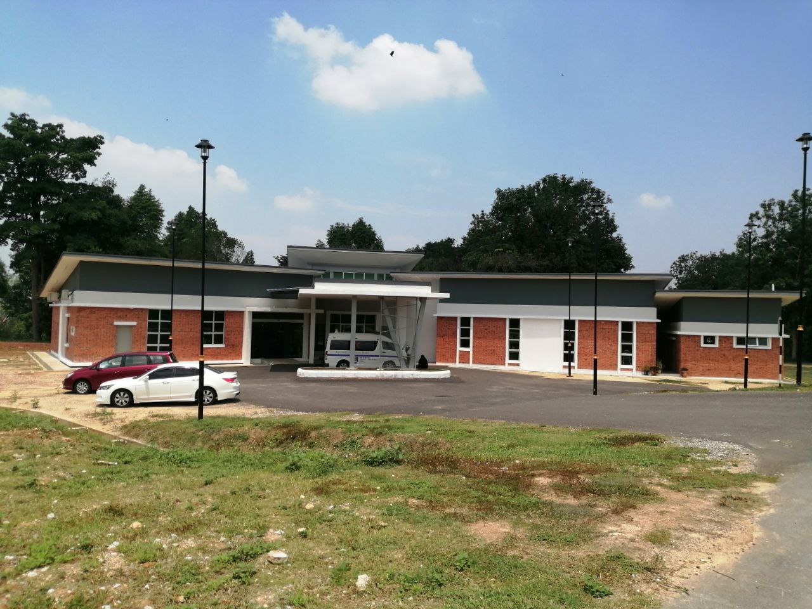
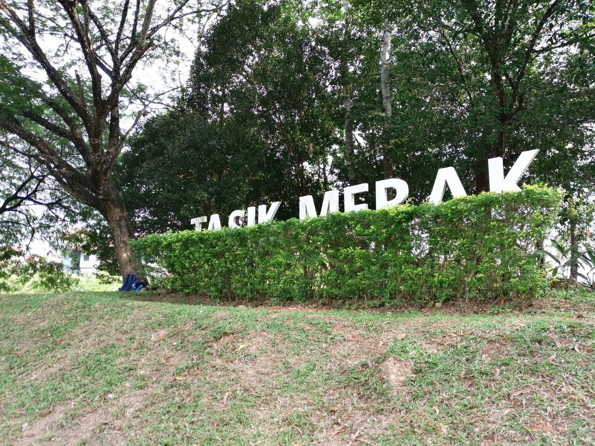
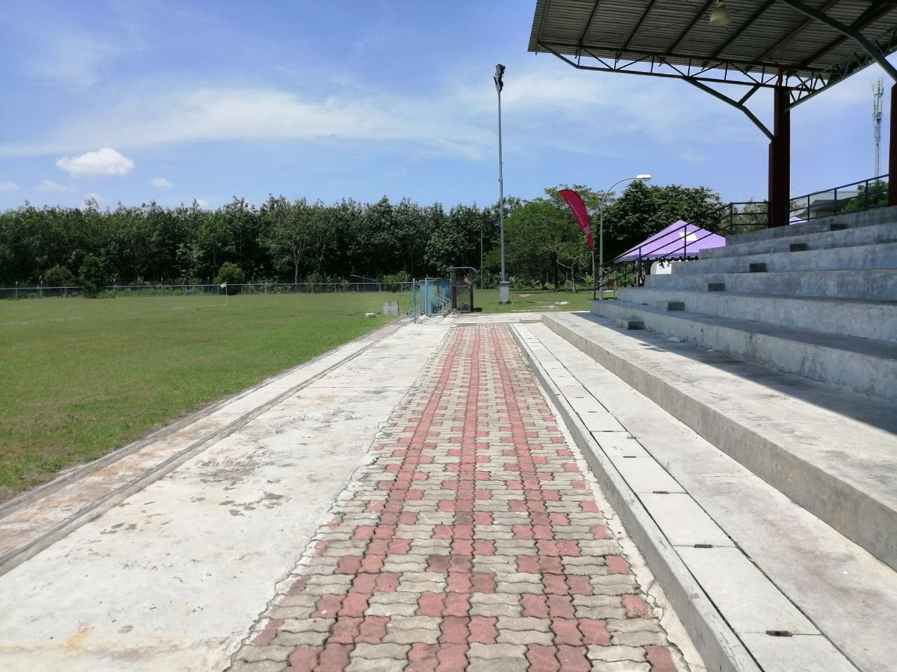
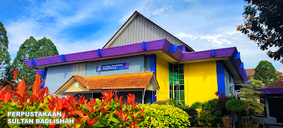
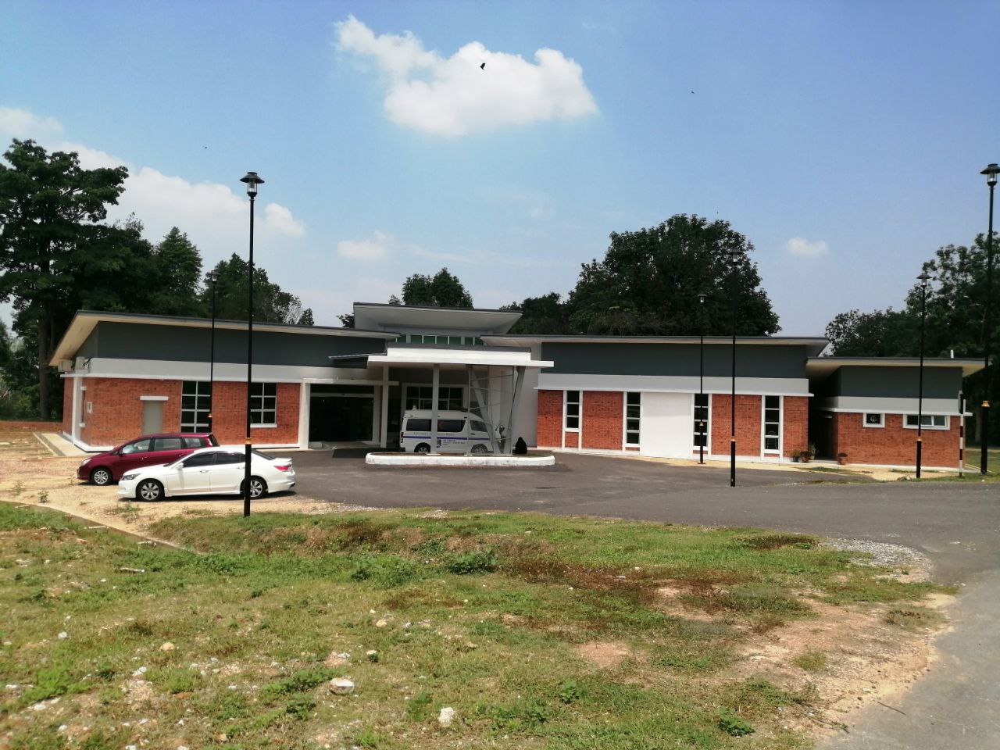
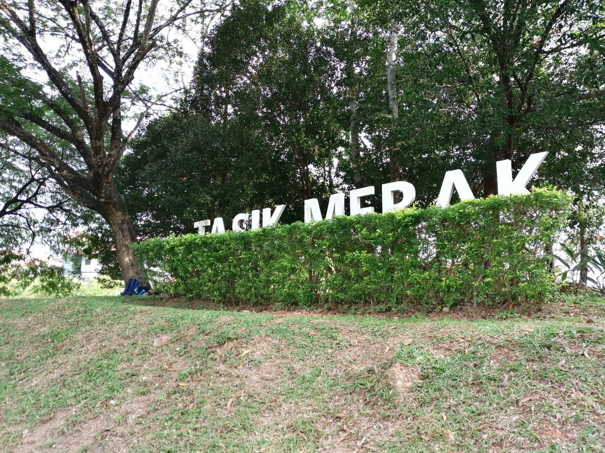
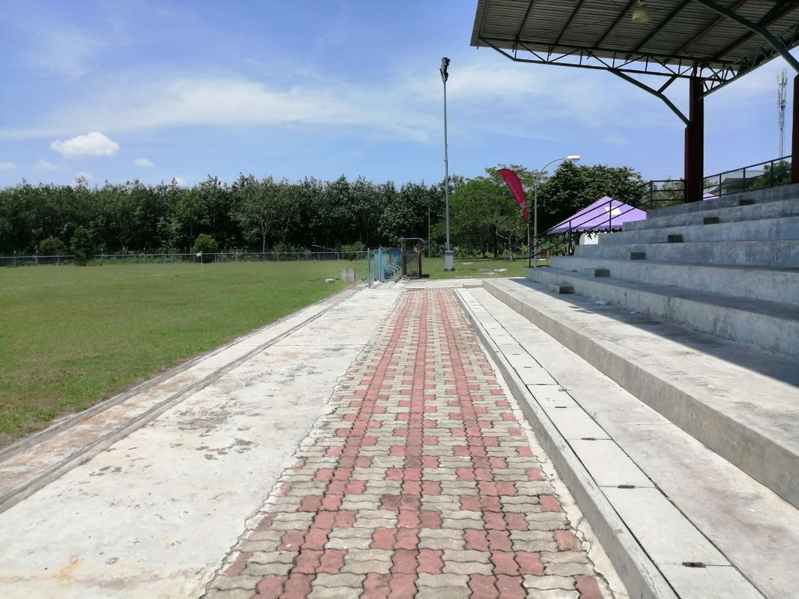
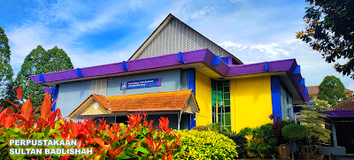

I started entering the school world in 2009 and finished primary school in 2013 at SK Taman Permata.
I went to SMK Lembah Keramat from 2014 to 2018. In form 1 to 3, I entered the Taqwa class because that class is the only one that studies Arabic and al-Quran subjects. In form 4, I took the Account, Addmath, and Economics subjects. Our class called Ar-Razi is known to be the only class that studies the Acount subject.
In 2019, I had the opportunity to continue my studies in Diploma of Library Management at UiTM Kedah. The place is very beautiful and not as big as other UiTM, but it was easy to move from one place to another place.
 






